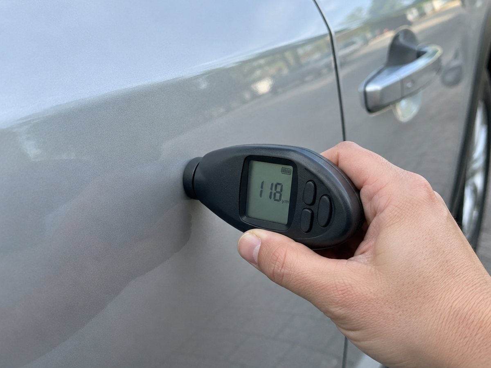
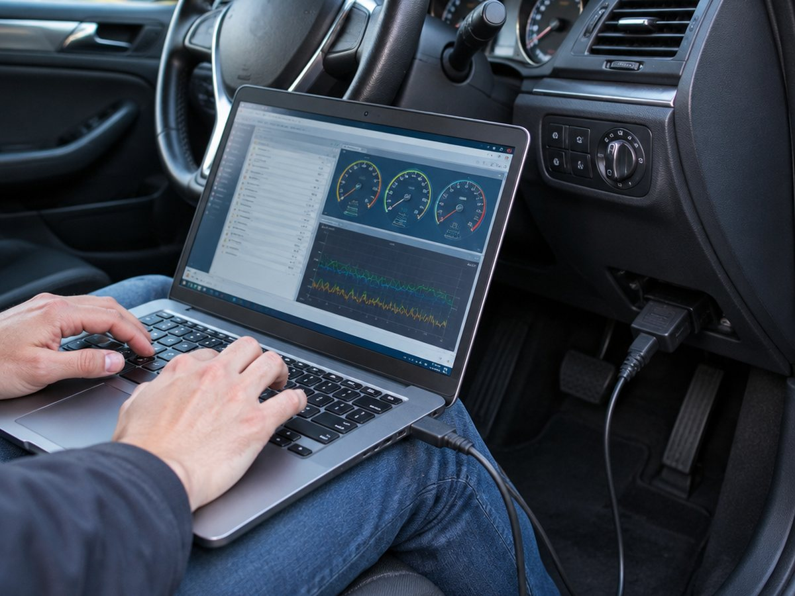

Главная · Осмотр
Протокол осмотра: восемь пунктов
Каждый пункт закрывается на месте. Раскройте, чтобы увидеть, что именно проверяется и какой риск это ловит.
Зачем столько пунктов
Немецкое объявление — это маркетинг. Хороший продавец пишет «первый владелец, сервисная книжка», плохой — «продаётся как есть». Разница видна только после проверки.
Мы смотрим машину так, как смотрели бы себе: сначала история и электроника, потом кузов и ходовая. Дешевле отказаться от варианта в Германии, чем обнаружить сюрприз в Гродно.

Проверяем до выезда: число владельцев, записи о пробеге, сервисную историю и то, как машина продавалась раньше.
- Сверяем пробег в объявлении с базами и сервисной книжкой
- Смотрим, не был ли автомобиль в такси, аренде или после аварии
- Если расхождение — говорим до осмотра, а не после покупки
Кузов, зазоры, стёкла, фары, салон, следы ремонта и перекраса — на месте, при дневном свете.
- Проверяем равномерность зазоров и следы разборки
- Смотрим петли, болты, герметики: где машина разбиралась
- Оцениваем состояние салона и запахи
Каждая панель по нескольким точкам. Заводская толщина обычно 90–160 мкм, 300 и выше — шпатлёвка или ремонт.
- Промериваем капот, крылья, двери, крышу, стойки
- Сверяем стороны между собой: разница говорит о ремонте
- Фото каждой точки уходит в отчёт
Читаем ошибки по всем блокам, смотрим пробег в электронных блоках и адаптации.
- Текущие и сохранённые ошибки, а не только индикатор на панели
- Пробег из блоков управления для сверки
- Смотрим параметры работы двигателя и коробки
Слушаем подвеску, проверяем разгон, работу коробки на малой скорости, тормоза и руль.
- Стуки и скрипы на неровностях
- Пинки и задержки в работе автоматической коробки
- Вибрации на скорости, увод в сторону
Смотрим, что реально обслуживалось, а не что написано в объявлении.
- Отметки ТО и их периодичность
- Замены по регламенту: масло, ремни, тормоза
- Соответствие записей пробегу
Расшифровываем заводскую комплектацию и сверяем с тем, что стоит на машине.
- Что было с завода, а что доустановлено
- Опции, за которые продавец просит доплату
- Соответствие цены реальной комплектации
Отчёт вы получаете до решения о покупке, а не после.
- Фото по панелям и проблемным местам
- Видео запуска, работы климата, экрана и ошибок
- Протокол с отметками по каждому пункту
Что вы получаете на руки
Отчёт приходит до того, как вы принимаете решение. Не после оплаты и не «по запросу».
- Протокол с отметками по каждому из восьми пунктов
- Фото панелей и проблемных мест, крупно и без ретуши
- Видео запуска, работы климата и экрана с ошибками
- Раскладку по деньгам: цена продавца, наши услуги, логистика

Заявка
Расскажите, какую машину ищете
Ответим вопросами, а не прайсом: что важно, какой бюджет, есть ли время ждать. Если направление не наше, скажем сразу.